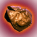

| Heridio Elemento de tecnología - Común | Hr | 20U | Elemento utilizado en la creación de componentes vitales para la exploración espacial.
Se encuentra en terreno planetario. A menudo resaltado por cubos holográficos en el visor del usuario tras escáner local. |
 | Platino Elemento de tecnología - No común | Pt | 40U | Potente elemento usado en la creación de componentes valiosos de nave y exotraje. Componente vital en muchos planos de tecnologías.
Se encuentra en la vegetación azul durante la exploración planetaria. |
 | Crisonita Elemento de tecnología - Raro | Ch | 60U | Elemento muy potente usado en muchos planos de tecnología avanzada, componentes y fórmulas de producto.
Se encuentra en estructuras cristalinas azules. |
 | Hierro Elemento óxido - Común | Fe | 10U | Elemento de explotación minera utilizado para construir y recargar tecnologías defensivas.
Se halla en formaciones rocosas y en zonas de interés geológico. |
 | Zinc Elemento óxido - No común | Zn | 30U | Potente elemento que se puede emplear para recargar tecnologías defensivas y para crear y mantener muchos componentes y dispositivos.
Se encuentra en vegetación amarilla en floración y en la flora planetaria. |
 | Titanio Elemento óxido - Raro | Ti | 45U | Óxido extremadamente potente empleado para recargar tecnologías defensivas.
Un componente clave en la creación de muchos dispositivos avanzados, productos y componentes.
Se encuentra en cúmulos cristalinos amarillos durante la exploración planetaria. |
 | Carbono Elemento isótopo - Común | C | 5U | Importante y abundante elemento usado para recargar armamento, equipamiento de extracción y soporte vital del exotraje.
Se halla en árboles, plantas y demás vegetación planetaria. |
 | Tamio9 Elemento isótopo - No común | Th | 15U | Potente elemento usado para cargar equipamiento de extracción, armamento y sistemas de soporte vital. También se usa para la creación de productos y dispositivos tecnológicos experimentales.
Se encuentra en la vegetación roja en floración y en la flora planetaria. |
 | Plutonio Elemento isótopo - Raro | Pu | 30U | Elemento extremadamente potente que se puede usar para cargar armamento, equipamiento de extracción y paquetes de energía de exotrajes.
Componente clave en la creación de muchas tecnologías avanzadas, componentes y productos.
Se encuentra en estructuras cristalinas rojas, y a menudo dentro de redes de cuevas planetarias. |
 | Iridio Elemento neutro - No común | Ir | 70U | Metal de transición blando, blanco y brillante.
Un lujo de gran valor y un cargamento muy popular entre muchos mercaderes.
Se puede combinar con otros elementos para crear valiosas aleaciones si se dispone de la fórmula. |
 | Cobre Elemento neutral - No común | Cu | 80U | Elemento metálico altamente conductivo y versátil.
Se ve con frecuencia en los manifiestos de carga de los mercaderes de muchas de las principales especies galácticas.
Se puede combinar con otros elementos para crear valiosas aleaciones si se dispone de la fórmula. |
 | Níquel Elemento neutro - No común | Ni | 100U | Metal blanco plata usado en muchos procesos industriales.
Suele ser objeto habitual de compra, venta y regateo en la Red de Comercio Galáctico.
Se puede combinar con otros elementos para crear valiosas aleaciones si se dispone de la fórmula. |
 | Aluminio Elemento neutro - Raro | Al | 120U | Metal dúctil y versátil de mucha utilidad.
Elemento muy codiciado en los mercados comerciales y en los manifiestos de carga de toda la galaxia conocida.
Se puede combinar con otros elementos para crear valiosas aleaciones si se dispone de la fórmula. |
 | Oro Elemento neutro - Raro | Au | 160U | Raro y con alta conductividad. Muchas de las principales especies de la galaxia lo usan a modo de decoración.
El oro es una pieza central para las economías de muchas especies galácticas, así como un valioso activo comercial.
Se puede combinar con otros elementos para crear valiosas aleaciones si se dispone de la fórmula. |
 | Emerilio Elemento neutro - Raro | Em | 200U | Metal plata oscuro que emite bajos niveles de radiación.
Elemento muy solicitado que se usa para la construcción de puestos planetarios.
Se puede combinar con otros elementos para crear valiosas aleaciones si se dispone de la fórmula. |
 | Radnox Elemento precioso - Muy raro | Ra | 220U | Recurso químico misterioso de gran valor. |
 | Calio Elemento precioso - Muy raro | Ca | 210U | Sustancia rara hallada en muchas especies amorfas de toda la galaxia. |
 | Murrino Elemento precioso - Muy raro | Mu | 220U | Valioso producto de lujo conocido por sus cualidades cautivadoras. |
 | Omegón Elemento precioso - Muy raro | Om | 225U | Elemento de materia oscura. Sustancia de enorme poder casi completamente desconocida y jamás probada.
Extremadamente rara. |
| Cimatígeno Elemento neutro - Raro | Cy | 200U | Elemento que se halla solo en los sistemas estelares azules y es común encontrarlo en grandes montones de terreno. |
| Rúbeo Elemento neutro - Raro | Ru | 210U | Elemento que se halla solo en los sistemas estelares rojos y es común encontrarlo en grandes montones de terreno. |
| Viridio Elemento neutro - Raro | Vi | 220U | Elemento que se halla solo en los sistemas estelares verdes y es común encontrarlo en grandes montones de terreno. |
| Temerio Elemento neutro - Raro | Te | 130U | Elemento químico que se halla solo en las laminillas de los hongos que crecen en los biomas tóxicos. |
| Corizágeno Elemento neutro - Raro | Co | 115U | Elemento químico que se halla solo en las hojas de las plantas resistentes al frío de tamaño mediano que crecen en los biomas nevados. |
| Candensio Elemento neutro - Raro | Cn | 125U | Elemento químico que se halla en las raíces de los árboles que viven en los biomas radiactivos. |
| Espadonio Elemento neutro - Raro | Sp | 130U | Elemento químico que suele encontrarse en las espinas y la piel de los cactus que viven en los biomas áridos. |
| Hervidio Elemento neutro - Raro | Fr | 120U | Elemento químico que se puede cosechar de la corteza de los grandes árboles que viven en los biomas calcinados. |
| Antrio Elemento neutro - Raro | An | 30U | Elemento químico que está presente en las hojas luminosas de las plantas brillantes que se encuentran en las cuevas. |
| Rigógeno Elemento neutro - Raro | Ri | 30U | Elemento químico que se halla en las raíces de ciertas plantas submarinas. |
| Mordita Elemento neutro - Raro | Mo | 10U | Compuesto que se puede extraer de los cadáveres de algunas especies. |
| Coprita Elemento neutro - Raro | Cr | 5U | Compuesto cristalino que se puede extraer de las heces de algunas especies. Se puede alimentar a las especies de forma que se formen cristales de coprita con mayor facilidad. |
| Púgneo Elemento neutro - Raro | Pg | 100U | Sustancia que gotea de la circuitería de los drones derribados. |
|  | Trófeo Elemento neutro - Raro | Tr | 100U | Elemento raro que liberan los motores que no funcionan de las naves derribadas. |